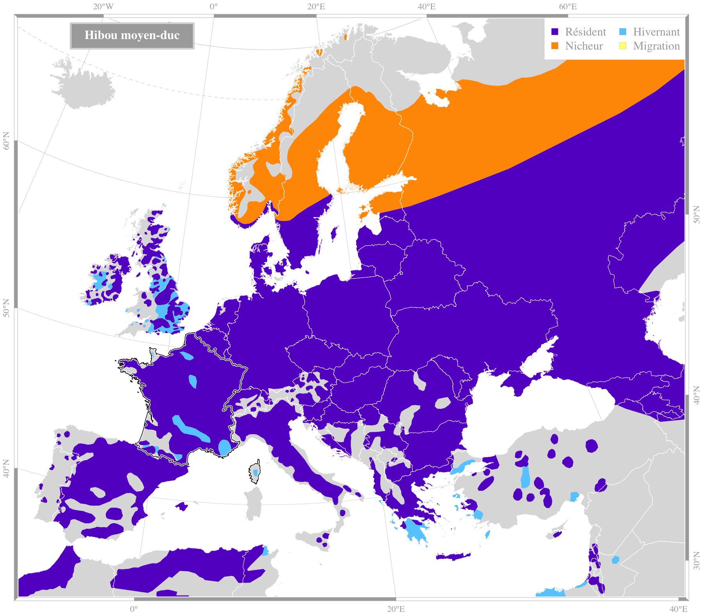

Crédit : biodivlibrary |
Hibou moyen-ducAsio otus (Linnaeus, 1758)Ordre : Strigiformes - Famille : Strigidae
Envergure : 90-100 cm Longueur : 35-37 cm Alimentation : rongeurs, oiseaux, reptiles, insectes Habitat : milieux boisés proche d'espaces ouverts |
|||||
Répartition en France
Espèce migratrice : oui |

Source des données : Bird Life International |